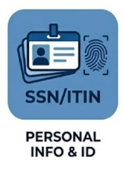
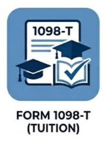
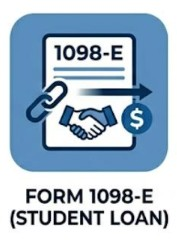
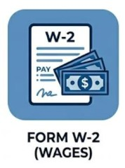
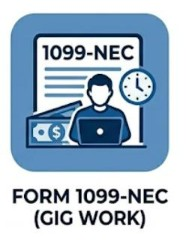
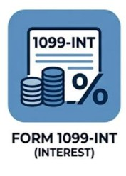
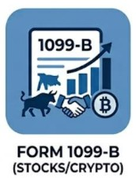
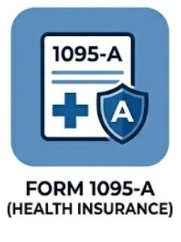
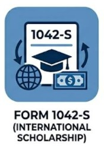

Your Tax Season Checklist: Documents You’ll Need
Before you sit down to file, you’ll want to have all your paperwork in one place.
Most of these forms are mailed to you or made available in your online portals by the
end of January or early February. Having these ready will make the filing process much
faster and ensure you don’t miss out on any potential refunds.
Personal Information

- Social Security Number (SSN) or ITIN: You will need this for yourself and
your spouse (if filing jointly).
- Government-Issued ID: A driver’s
license or state ID to verify your identity.
- Bank Account & Routing Numbers: If you are expecting a refund, having your
bank info ready allows the IRS to deposit your money directly into your
account—much faster than a paper check.
Education-Related Documents

- Form 1098-T (Tuition Statement): This is the most important form for a BYU-I
student. It shows how much tuition you paid and is used to claim the American
Opportunity Tax Credit. Where to find it: Log into your BYU-I account and
search for "Student Tax Information" or check the "Financial Services" section.

- Form 1098-E (Student Loan Interest): If you are currently paying back student
loans, this form shows the interest you paid, which may be tax-deductible.
- Receipts for Required Materials: Keep records of what you spent on required
textbooks, software, or lab equipment, as these are often "qualified expenses"
for tax credits.
Income Documents

- Form W-2 (Wage and Tax Statement): You’ll get one of these from every employer
you had during the year. It shows your total earnings and the taxes already
taken out of your paycheck.

- Form 1099-NEC (Gig Work/Freelancing): If you did side work (like DoorDash,
tutoring, or freelance design) and earned over $600, you should receive this
form.

- Form 1099-INT (Interest Income): If you have a savings account that earned a
significant amount of interest, your bank will provide this.

- Form 1099-B (Stocks or Crypto): If you sold any stocks or cryptocurrency during
the year, you will need this statement from your brokerage
(like Robinhood or Coinbase).
Health & Other Forms

- Form 1095-A: If you or your family used the Health Insurance Marketplace
(rather than a plan through an employer or the school), you will need this to
report your coverage.

- Form 1042-S (International Students): If you are an international student who
received a scholarship that exceeded your tuition costs, BYU-I will issue
this form, usually by mid-March.
Check your portals! Many students forget that they won't get a paper copy of their
1098-T in the mail. Be sure to check your BYU-I student account electronically to
download your forms as soon as they are available.